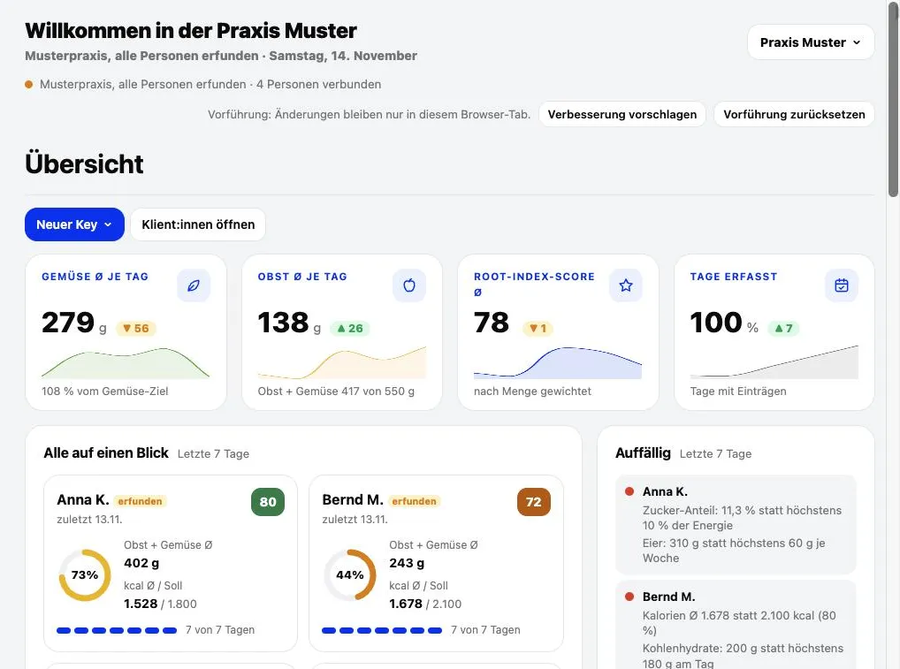
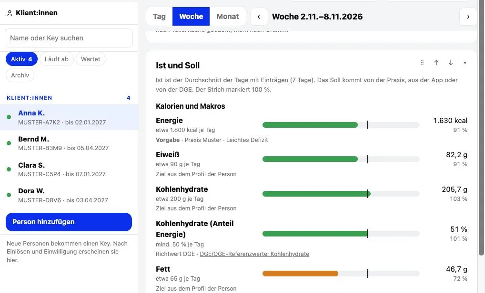
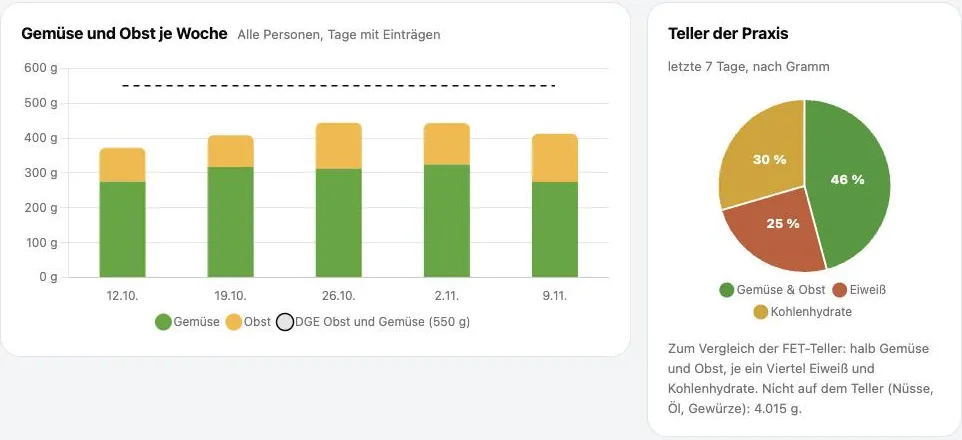
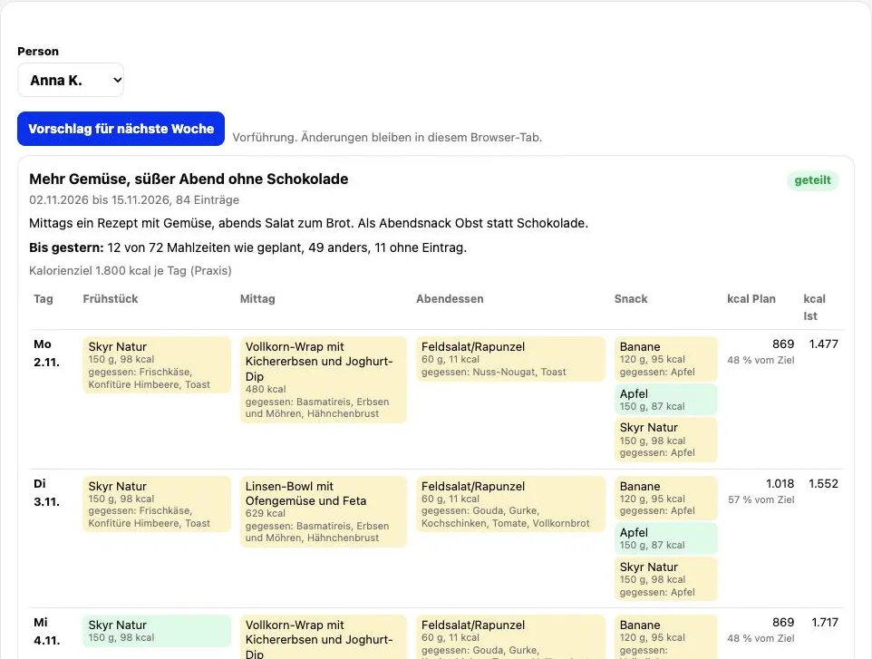

Das Ernährungstagebuch der Klient:innen, ausgewertet für die Beratung
Root Index Pro ist der Bereich für Ernährungsfachleute. Klient:innen erfassen ihre Mahlzeiten in Root Index. Nach ihrer Einwilligung sieht die Fachkraft Tagebuch und Auswertungen und arbeitet damit weiter: Ziele, Pläne, Berichte, Rezepte.
Nach dem Anlegen wird das Konto als Fachperson freigeschaltet. Dafür genügt eine kurze Nachricht mit Name und Praxis an kontakt@root-index.de oder über das Anfrageformular. Die Musterpraxis zeigt die echte Oberfläche mit erfundenen Personen und echten Produkten. Sie ist ohne Anmeldung offen; gespeichert wird dort nichts.
Was Root Index Pro kann
Ein Key je Klient:in
Den Key per E-Mail, als QR-Karte oder als Code weitergeben. Damit legt die Person ein Konto an und nutzt Root Index Premium, solange der Key läuft. Laufzeit verlängern oder Key beenden geht jederzeit.
Tagebuch nur mit Einwilligung
Einträge sind erst sichtbar, wenn die Person eingewilligt hat. Widerruft sie, ist wieder nichts zu sehen. Vor dem Start bestätigt jede Fachperson eine Verschwiegenheitsvereinbarung mit Root Index.
Tag, Woche, Monat, mit DGE-Abgleich
Energie, Eiweiß, Kohlenhydrate, Fett, Zucker, Ballaststoffe, Salz sowie Gemüse und Obst, verglichen mit den Referenzwerten der DGE oder mit eigenen Vorgaben der Fachkraft. Dazu der Verlauf über den Begleitzeitraum und eine Statistik der ganzen Praxis.
Pläne, Berichte, Rezepte
Ernährungspläne schreiben und mit dem Tagebuch vergleichen (Ist gegen Plan). Berichte drucken oder als PDF speichern. Rezepte mit einer oder mehreren Personen teilen.
Jedes verpackte Lebensmittel bekommt eine Zahl von 0 bis 100
Der Root Index beschreibt, woraus ein Produkt besteht und wie stark es verarbeitet ist. Er setzt sich aus vier Teilen zusammen; Grundlage sind die Angaben auf dem Etikett.
Nährwerte 40, Zutaten 30, Zusatzstoffe 15, Verarbeitung des Endprodukts 15 Punkte.
Der Index ist keine Verzehrempfehlung; wie viel und wie oft, bleibt Sache der Beratung. Wie Root Index bewertet
Einblick in die Musterpraxis
Bildschirmfotos aus der Vorführung. Alle Personen sind erfunden, Produkte, Nährwerte und Scores sind echt.








Preis
- Keine Grundgebühr. Berechnet werden eingelöste Keys; jeder angefangene Monat zählt voll.
- Abrechnung monatlich über Stripe: Die Rechnung für den Vormonat kommt am 1. und wird per SEPA-Lastschrift oder Karte eingezogen.
- Keys lassen sich jederzeit beenden.
- Preise ohne Umsatzsteuer: Kleinunternehmer nach § 19 UStG.
So beginnt die Arbeit
- Konto anlegen mit E-Mail und Passwort.
- Kurze Nachricht mit Name und Praxis an kontakt@root-index.de. Danach wird das Konto als Fachperson freigeschaltet.
- Verschwiegenheitsvereinbarung bestätigen und unter Abrechnung eine Zahlungsart hinterlegen.
- Ersten Key anlegen und an die Person schicken. Nach Einlösen und Einwilligung erscheinen ihre Zahlen.
Anfrage
Fragen zu Ablauf, Preis oder Freischaltung? Die Antwort kommt per E-Mail.
Danke, die Anfrage ist angekommen.
Die Antwort kommt per E-Mail an . Bei Eile: kontakt@root-index.de